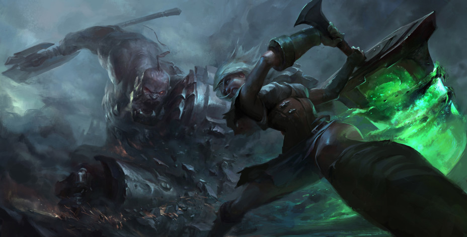
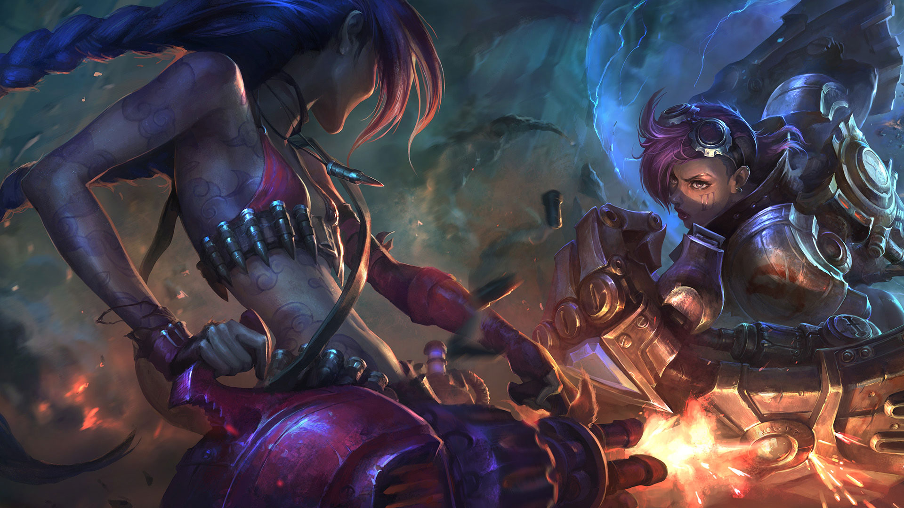
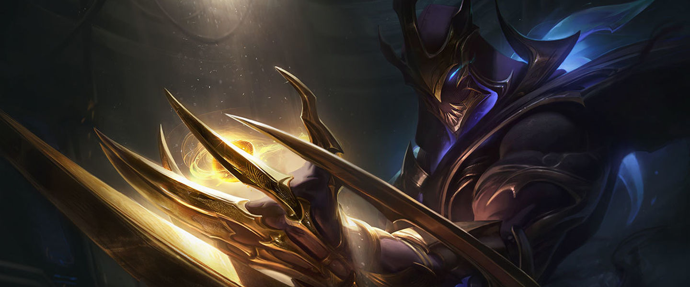

LEAGUE OF LEGENDS
Historia

En Piltover, donde el sueño de uno puede convertirse en el progreso de todos, nace una estrella.
De pequeña, a Seraphine le apasionaba la música, sobre todo las nanas de su padre. Eran canciones preciosas pero tristes.
Su padre y su madre, originarios de Zaun, se habían mudado a Piltover, la Ciudad del Progreso, en busca de una vida mejor.
Seraphine se asomaba por la ventana del taller de hexacústica de sus padres, donde la tecnología de sonido estropeada volvía a funcionar,
y cantaba junto con las calles. Los cánticos de las Puertas del Sol, el silbido de los aprendices e incluso la melodía de las conversaciones... En una
ciudad como Piltover, Seraphine nunca estaba sola.
Con el tiempo, se dio cuenta de que podía sentir canciones demasiado privadas y personales que no oían las personas normales y
corrientes. La intensidad de sus talentos creció con ella. Oía el alma de cada individuo, afectuosa o cruel, y esto convertía las calles
que tanto había adorado en una abrumadora cacofonía de deseos opuestos. ¿Cómo iba a comprender las voces si no cantaban en armonía?
Algunos días, se escondía en un rincón, temblando y tapándose los oídos, incapaz de escucharse a sí misma en medio de aquel caos.
Parche

Hola, ¿está encendido esto? *golpea el micro* ¿Queda alguien vivo después del tocho de la última versión?
¡Aquí estamos tras el inicio de la pretemporada! Traemos una serie de cambios centrados en los objetos mientras
estudiamos los cambios del nuevo ecosistema. Resumiendo: los míticos de AP son fuertes en general, mientras que otros
objetos necesitan un poco más de poder para desempeñar su papel. Acompañadnos en este viaje en el que echamos el freno a lo
que se pasa de la raya y pisamos el acelerador cuando algo rinde mal. Ya sabéis lo que hay que hacer.
También cabe destacar dos nuevas actualizaciones a los sistemas de comportamiento para mitigar el impacto de los
jugadores desconectados o inactivos y unos pequeños retoques para dos colegas del Vacío.
Y una cosa más, también queremos animaros a revisar las notas de la versión 10.23 después de leer esta versión, ya que hemos
realizado un montón de actualizaciones y correcciones de errores desde que se publicó por primera vez. Así que, si creéis que no se
ha corregido un error muy loco que un desarrollador mencionó que se corregiría, probablemente esté documentado allí.
Si lo que estáis buscando son las notas de la versión de TFT, ¡adentraos en este portal!
Mi Personaje Fav

Zed, despiadado y nada compasivo, es el líder de la Orden de la Sombra, una organización que él mismo creó con el propósito de
militarizar las tradiciones marciales y mágicas de Jonia para expulsar a los invasores noxianos. Durante la guerra, la desesperación lo llevó
a liberar la forma secreta de la sombra, un espíritu mágico tan peligroso y corrupto como poderoso. Zed ha logrado dominar todas las técnicas
prohibidas para acabar con todo aquello que amenace a su nación o a su nueva orden.